|
JKQTPlotter trunk/v5.0.0
an extensive Qt5+Qt6 Plotter framework (including a feature-richt plotter widget, a speed-optimized, but limited variant and a LaTeX equation renderer!), written fully in C/C++ and without external dependencies
|
|
JKQTPlotter trunk/v5.0.0
an extensive Qt5+Qt6 Plotter framework (including a feature-richt plotter widget, a speed-optimized, but limited variant and a LaTeX equation renderer!), written fully in C/C++ and without external dependencies
|
This section assembles some simple examples of usage. You can find more (complex) examples for the classes in this repository in the subfolder "test". All test-projects are Qt-projects that use qmake to build. You can load them into QtCreator easily.
| Screenshot | Description | Notes |
|---|---|---|
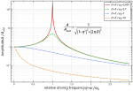
| Example (JKQTPlotter): Line Graph with Logarithmic y-axis | JKQTPXYLineGraph and JKQTPGeoText C++ vector of data logarithmic axes and styling plot line styles internal LaTeX parser add commenting text to a graph |
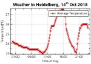
| Example (JKQTPlotter): Date/Time Axes | JKQTPXYLineGraph and JKQTPFilledVerticalRangeGraph C++ vector of data date/time axes plot min/max range graph internal LaTeX parser data from CSV files |
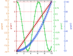
| Example (JKQTPlotter): Secondary Axes | plottig with secondary axes, JKQTBasePlotter::addSecondaryXAxis()/JKQTBasePlotter::addSecondaryYAxis() |
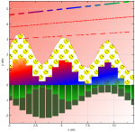
| Example (JKQTPlotter): Advanced Line and Fill Styling | JKQTPXYLineGraph, JKQTPSpecialLineHorizontalGraph and JKQTPBarVerticalGraph C++ vector of data advanced line styling and filling |
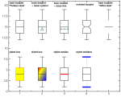
| Example (JKQTPlotter): Styling different aspects of boxplots | Modifying different Aspects of the Styling of boxplots |

| Tutorial (JKQTPlotter): Styling a JKQtPlotter | Modifying different Aspects of the Styling of JKQTPlotter |
| Screenshot | Description | Notes |
|---|---|---|
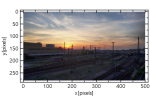
| Example (JKQTPlotter): QImage as a Graph | JKQTPImage QImage drawn onto a plot with arbitrary scaling inverted coordinate axes |
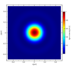
| Example (JKQTPlotter): Simple math image plot | JKQTPColumnMathImage image data copied from C-style row-major array into a single column of the internal datastore Describes several options of the image plotting classes (different ways of color coding, what to do with data above/below the limits etc.) |
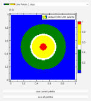
| Example (JKQTPlotter): Image Plots with Custom Palettes | JKQTPColumnMathImage user-defines palettes palettes from files |
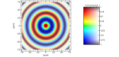
| Example (JKQTPlotter): Simple math image plot with modifier datat | JKQTPColumnMathImage image data copied from C-style row-major array into a single column of the internal datastore Image is modified by a second image to display two data dimensions at the same time |
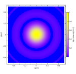
| Example (JKQTPlotter): Simple math image plot without use of central JKQTdatastore | JKQTPMathImage image data in a C-style row-major array, not using internal datastore |
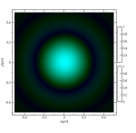
| Example (JKQTPlotter): Simple Math RGB/CMY Image Plot | JKQTPColumnRGBMathImage image data in a C-style row-major array, not using internal datastore RGB/CMY color compositing |

| Example (JKQTPlotter): Simple math image plot, showin a 1-channel OpenCV cv::Mat | JKQTPColumnMathImage image data copied from OpenCV cv::Mat-structure into a single column of the internal datastore |

| Example (JKQTPlotter): Simple RGB image plot, showing a 3-channel OpenCV cv::Mat | JKQTPColumnRGBMathImage image data copied from OpenCV cv::Mat-structure into three columns of the internal datastore inverted coordinate axes |
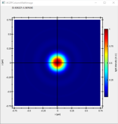
| Example (JKQTPlotter): Simple math image plot, showin a 1-channel CImg image | JKQTPColumnMathImage image data copied from CImg datastructure into a single column of the internal datastore |
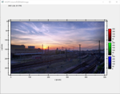
| Example (JKQTPlotter): Simple math image plot, showing a 3-channel CImg image | JKQTPColumnRGBMathImage image data copied from CImg datastructure into three columns of the internal datastore inverted coordinate axes |
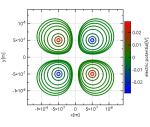
| Example (JKQTPlotter): Contour Plots | JKQTPColumnContourPlot image data edited inside JKQTPDatastore |
| Screenshot | Description | Notes |
|---|---|---|

| Tutorial (JKQTPlotter): Using a JKQTPlotter inside a Qt User Interface Designer (UI) File | using Qt Form Designer parsed function plots (JKQTPXParsedFunctionLineGraph) |

| Tutorial (JKQTPlotter): User-Interactions in JKQtPlotter | different possibilities of user-interaction in JKQtPlotter |
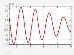
| Example (JKQTPlotter): Using a QScrollbar together with JKQtPlotter | using QScrollBar together with JKQtPlotter |
| Screenshot | Description | Notes |
|---|---|---|
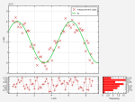
| Example (JKQTPlotter): Laying out Several Plots | Combining plots in Qt Layouts linking plot axes copy data from a std::map int the datastore print plots/print preview |
|
| Tutorial (JKQTPlotter): Styling a JKQtPlotter | Modifying different Aspects of the Styling of JKQTPlotter |
| Example (JKQTPlotter): Image Plots with Custom Palettes | JKQTPColumnMathImage user-defines palettes palettes from files |
| Screenshot | Description | Notes |
|---|---|---|
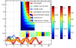
| Tutorial (JKQTPDatastore): Basic Usage of JKQTPDatastore | Basic Data Management with JKQTPDatastore Copying data into a JKQTPDatastore Editing data inside a JKQTPDatastore Editing Image Data in a JKQTPDatastore |
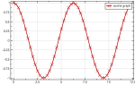
| Tutorial (JKQTPDatastore): Iterator-Based usage of JKQTPDatastore | Iterator-based Data Management with JKQTPDatastore |

| Tutorial (JKQTPDatastore): Advanced 1-Dimensional Statistics with JKQTPDatastore | Advanced 1-Dimensional Statistical Computation with JKQTPDatastore using the internal statistics library (see Statistical Computations ) basic statistics (mean, standard deviation, ...) boxplots histograms kernel density estimates (KDE) |
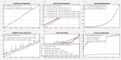
| Tutorial (JKQTPDatastore): Regression Analysis (with the Statistics Library) | Advanced 1-Dimensional Statistical Computation with JKQTPDatastore using the internal statistics library Regression Analysis (with the Statistics Library) robust regression (IRLS) weighted regression non-linear regression polynomial fitting |
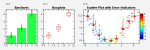
| Tutorial (JKQTPDatastore): 1-Dimensional Group Statistics with JKQTPDatastore | Advanced 1-Dimensional Statistical Computation with JKQTPDatastore grouped statistics error indicators from data boxplots |

| Tutorial (JKQTPDatastore): Advanced 2-Dimensional Statistics with JKQTPDatastore | Advanced 2-Dimensional Statistical Computation with JKQTPDatastore using the internal statistics library (see Statistical Computations ) histograms kernel density estimates (KDE) |
| Screenshot | Description | Notes |
|---|---|---|
| Example (JKQTPlotter): Laying out Several Plots | Combining plots in Qt Layouts linking plot axes copy data from a std::map int the datastore print plots/print preview | |
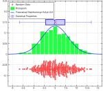
| Example (JKQTPlotter): Plotting a Statistical Distribution of Data | Combines several different graphs to draw random values, their distribution and some statistical properties |
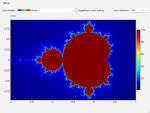
| Example (JKQTPlotter): Mandelbrot Set Explorer | Allows to zoom into the Mandelbrot Set, using the different Zooming methods of JKQTPlotter |
| Screenshot | Description | Notes |
|---|---|---|
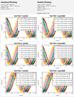
| Example (JKQTPlotter): Multi-Threaded (Parallel) Plotting | multi-threaded plotting using JKQTBasePlotter |
| Screenshot | Description | Notes |
|---|---|---|
| Example (JKQTPlotter): CMake Example | explains how to link against JKQTPlotter with CMake | |
| Example (JKQTPlotter): CMake FetchContent Example | explains how to link against JKQTPlotter with CMake's FetchCOntent-API |
| Screenshot | Description | Notes |
|---|---|---|

| Example (JKQTMathText): A simple usage example | JKQTMathText render LaTeX markup (Schrdinger's equation) |
| Tool (JKQTMathText): Command-Line Utility jkqtmathtext_render | JKQTMathText command-line utility | |

| Example (JKQTMathText): A test application | JKQTMathText render LaTeX markup |
| Screenshot | Description | Notes |
|---|---|---|

| Example (JKQTFastPlotter) | JKQTFastPlotter |
| Screenshot | Name | Notes/Description |
|---|---|---|
| Tool (JKQTMathText): Command-Line Utility jkqtmathtext_render | uses JKQTMathText to render LaTeX Markup into an image file and used to render different images for the documentation | |
| Tool (JKQTMathText): Command-Line Utility jkqtplotter_doc_imagegenerator | uses JKQTPlotter to render different images for the documentation |